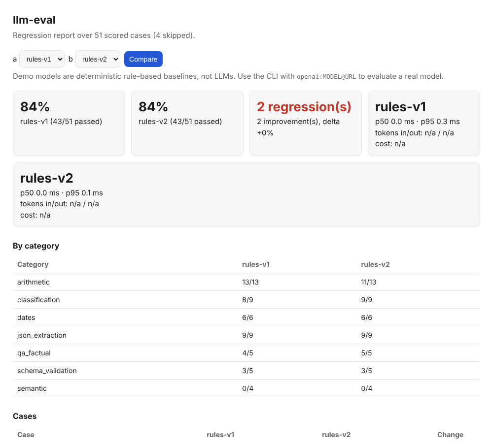

llm-eval-harness
Regression testing for LLM outputs: run a model over a categorized suite, record latency, tokens and cost, compare two runs, and fail CI when something that used to pass now fails.
suite (55 cases) ──► model ──► scorers ──► run.json
│
llm-eval compare a.json b.json ◄──┘ exit 1 on regression
- Layered scoring: exact match, JSON Schema, embedding similarity, LLM-as-judge
- Works with any OpenAI-compatible endpoint (OpenAI, Ollama, vLLM); records temperature, seed, p50/p95 latency, tokens, cost
- Case-level diffs: two runs with the same pass rate can still hide regressions
- 55 tests; ran live against Gemini (see results below), plus mocked and fake-server tests
Try it (Python 3.10+, checked from a clean virtual environment):
pip install git+https://github.com/msharsha565-create/llm-eval-harness && llm-eval run --model rules-v1View repository →